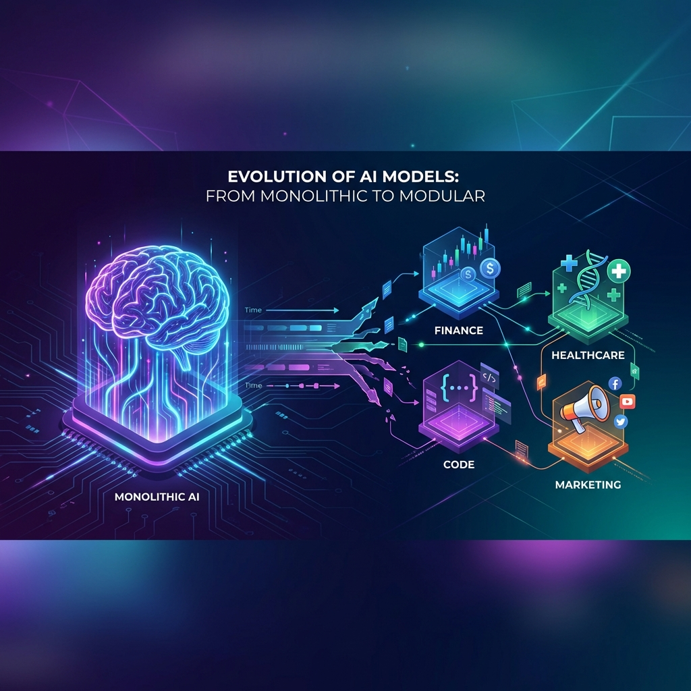
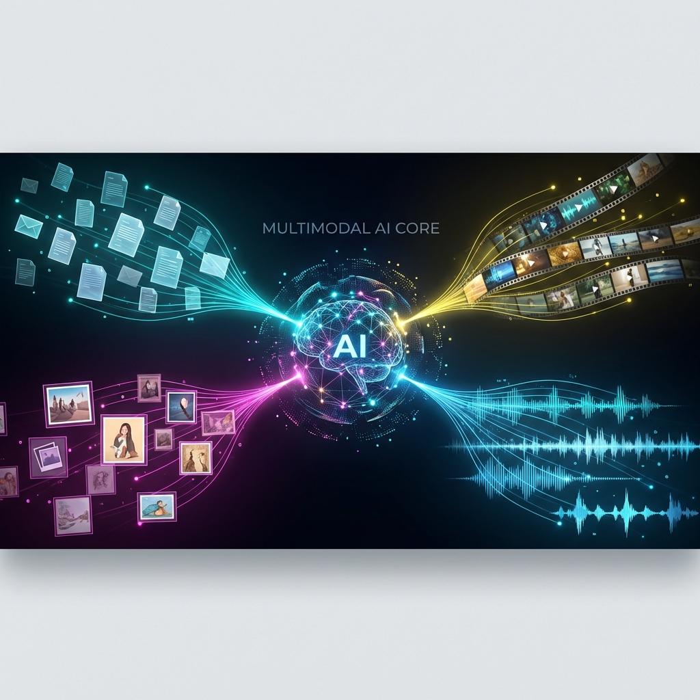
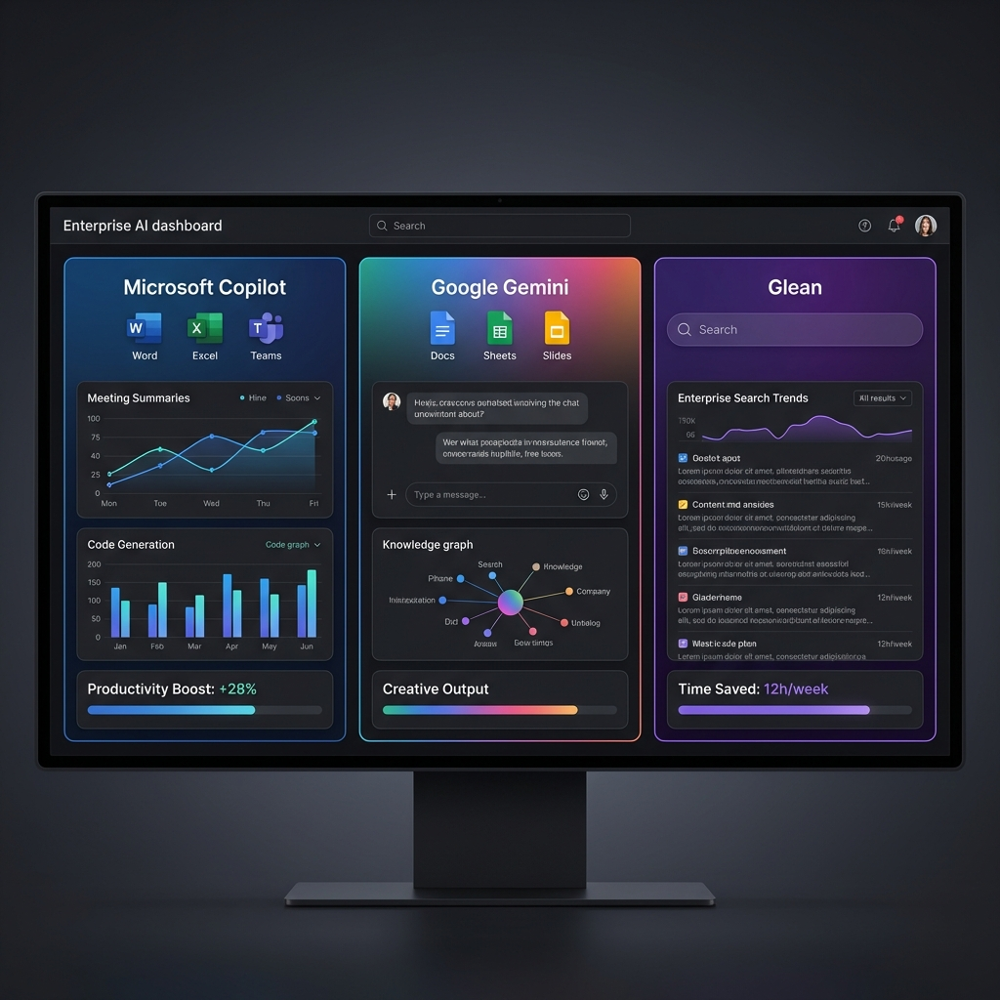
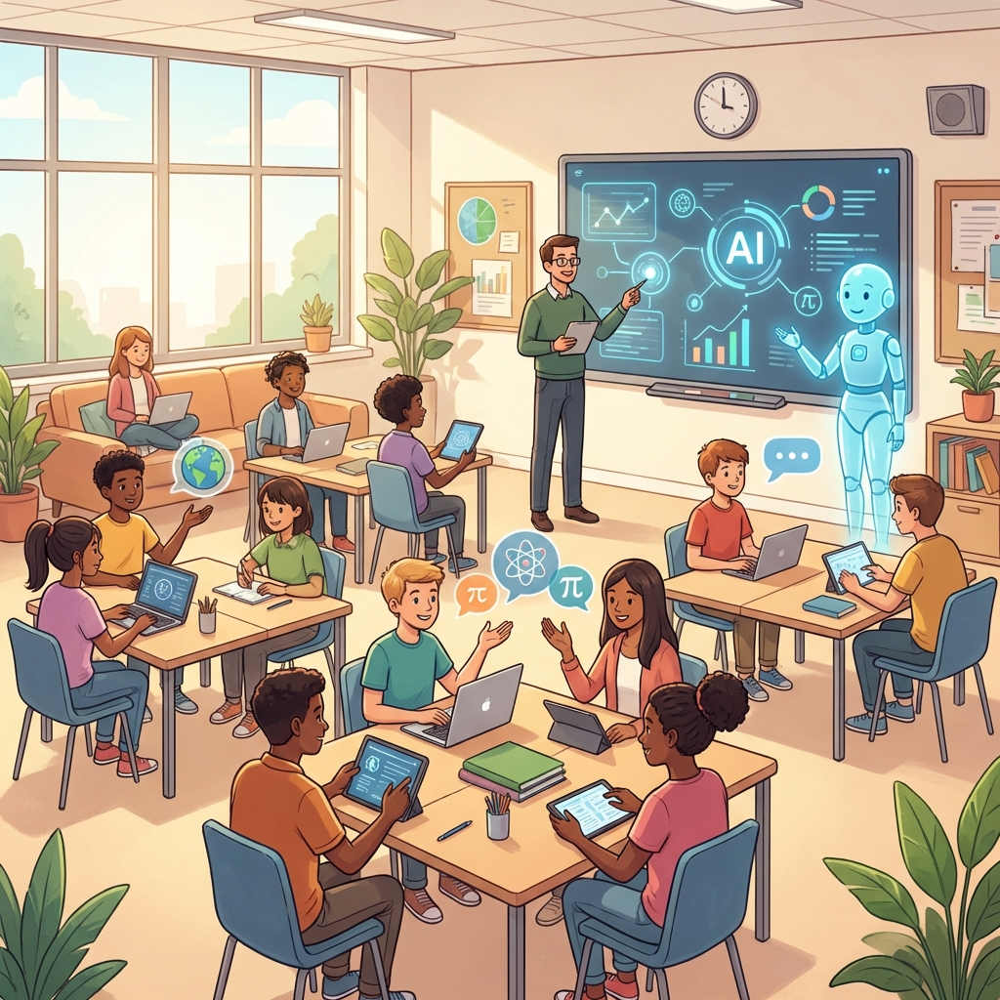

Rok 2026 přináší zásadní změny v tom, jak se vyvíjejí a používají velké jazykové modely a generativní AI. Od posunu k menším specializovaným modelům až po masivní nástup multimodální generace – podíváme se na to, co se skutečně děje a co to znamená pro běžné uživatele, firmy i školství.
🧠 Směr vývoje LLM v roce 2026
Éra „jednoho obřího modelu pro všechno" ustupuje do pozadí. Firmy zjistily, že menší, specializované modely (small/specialized language models) jsou pro konkrétní úlohy výhodnější – jsou levnější, rychlejší a po doladění dosahují srovnatelné nebo dokonce lepší přesnosti.
Místo aby společnost platila tisíce dolarů měsíčně za GPT-5 API na zpracování zákaznických dotazů, může si natrénovat vlastní model velikosti 7B parametrů specificky na své produkty a dokumentaci. Výsledek? 10x nižší náklady a 3x rychlejší odpovědi.
Boom open-source modelů
Rok 2026 je rokem rozmachu open-source LLM. Modely jako Llama 4, Mistral Large 3, Qwen 3 nebo DeepSeek V4 se výkonově přibližují komerčním konkurentům a nabízejí firmám:
- Vlastní hosting – data zůstávají v kontrole firmy
- Jemné doladění – model lze přizpůsobit přesně vašim potřebám
- Datová suverenita – žádné sdílení citlivých informací s třetími stranami
- Nulové API závislosti – funguje i offline
💡 Pragmatický přístup k AI
Místo honby za maximálním IQ modelu se firmy zaměřují na robustnost, spolehlivost a měřitelný dopad. Důležitější než "nejnovější model" je správné otestování, benchmarky a reálná výtěžnost v konkrétních pracovních postupech.
🎨 Generativní AI – co je teď „horké"
Multimodální generace
Největší pokrok v roce 2026 je v nástrojích, které umí pracovat současně s textem, obrázky, videem i zvukem. Už nemusíte přepínat mezi desítkou různých aplikací – jeden nástroj vám vytvoří:
- Marketingovou kampaň včetně grafiky, videa a hudby
- Vzdělávací kurz s textem, animacemi a namluvením
- Prezentaci s vizuály generovanými přímo z vašich poznámek
Nástroje jako Pictory, Synthesia a Fliki se dostávají do další úrovně integrace do běžných workflow. Google a OpenAI zavádějí multimodální funkce přímo do svých hlavních produktů.
Generativní kódování je tady
Generativní kódování je oficiálně považováno za průlomovou technologii roku 2026. Nástroje jako GitHub Copilot, Cursor, Replit nebo Lovable mění způsob, jakým se píše software.
I lidé s minimální znalostí programování dokáží vytvářet funkční aplikace. Stačí popsat, co chcete, a AI vygeneruje kompletní kód včetně testů a dokumentace. Časová úspora: 40-60% oproti tradičnímu programování.
💼 Praktické AI nástroje pro každého
V kancelářských balících se generativní AI stává standardem, nikoli experimentální funkcí. Pokud používáte Google Workspace nebo Microsoft 365, AI asistenti jsou teď součástí vašeho běžného dne.
Gemini for Workspace
Google integroval Gemini napříč celým ekosystémem – Docs, Sheets, Gmail, Slides, Meet. Můžete:
- Nechat AI napsat email na základě bodů, které jste načrtli
- Vygenerovat kompletní prezentaci ze zápisků z porady
- Analyzovat data v Sheets a vytvořit grafy automaticky
- Získat shrnutí e-mailového vlákna jedním kliknutím
Microsoft Copilot
Microsoft Copilot je zabudovaný v Teams, Outlooku, Wordu, Excelu a PowerPointu. Pomáhá s:
- Automatickými zápisy z porad v Teams
- Shrnutím dlouhých e-mailových konverzací
- Návrhem prezentací na základě tématu
- Analýzou tabulek a prediktivním modelováním
Personalizace a soukromí
Google Gemini zavádí „Personal Intelligence" – nástroj může automaticky využívat váš Gmail, vyhledávání, historii YouTube a Fotky k personalizovaným odpovědím. To zvyšuje užitečnost, ale otevírá i důležité otázky ochrany soukromí.
🏢 Podnikové nástroje a trendy
Podniky přestávají testovat desítky AI nástrojů a místo toho se zaměřují na měřitelný přínos. Prosazují se menší, rychle nasaditelné AI projekty s jasným dopadem:
- Automatizace reportingu (úspora 10-15 hodin týdně)
- Zrychlení zákaznické podpory (50% rychlejší řešení dotazů)
- Lepší predikce v logistice (snížení nákladů o 20-30%)
📊 Dominantní podnikové nástroje
Gemini for Workspace – pro organizace na Google stacku
Microsoft Copilot – pro firmy na Microsoft 365
Glean – jako „firemní vyhledávač" přes Slack, Drive, SharePoint
Přehled klíčových podnikových nástrojů
| Oblast použití | Nástroj | Pro koho | Poznámka |
|---|---|---|---|
| Kancelář, dokumenty | Gemini for Workspace | Firmy na Google | Psaní, shrnutí, tabulky |
| Kancelář, dokumenty | Microsoft Copilot | Firmy na M365 | Office, Teams, Outlook |
| Znalostní báze | Glean | Střední a velké firmy | Prohledává více zdrojů |
| Vzdělávání | Synthesia | HR, školy | Instruktážní videa |
| Marketing | EmailCraft | Marketing, sales | Personalizované kampaně |
Agentické platformy
Trendem jsou „agentické" platformy – kombinace AI modelů a autonomních agentů, které dokážou samostatně plánovat a vykonávat sekvence úkolů napříč aplikacemi. Například: „Vytvoř mi report z prodejních dat, pošli ho týmu a naplánuj schůzku na příští týden" – a AI to udělá celé samo.
🎓 Co to znamená pro školu a výuku
Výukový kontext
Multimodální AI (text + obraz + video) umožňuje učitelům rychle vytvářet:
- Výukové materiály přizpůsobené konkrétnímu tématu
- Mikro-kurzy s vizuálními vysvětleními
- Interaktivní testy a kvízy
- Videa s vysvětlením složitých konceptů
Praktická dovednost pro žáky
Práce s AI asistenty (Copilot, Gemini) se stává podobně důležitá jako kdysi práce s tabulkovým procesorem. Je třeba učit žáky:
- Promýšlet kvalitní zadání (prompt engineering)
- Ověřovat fakta a zjišťovat zdroje
- Citovat a pracovat s chybovostí modelu
- Rozpoznávat, kdy AI pomáhá a kdy škodí
Etika a občanská nauka
Nové funkce personalizace (přístup k e-mailům, historii vyhledávání) otevírají prostor pro debaty o soukromí, regulaci AI a odpovědnosti firem i státu. Tyto témata by měla být součástí hodin občanské výchovy a etiky.
💡 Závěrečné doporučení pro pedagogy
Nezaměřujte se na zákazy používání AI. Místo toho učte žáky pracovat s AI zodpovědně. AI je nástroj – stejně jako kalkulačka nebo internet. Měli bychom učit, jak ho používat efektivně a eticky, nikoli ho zakazovat.